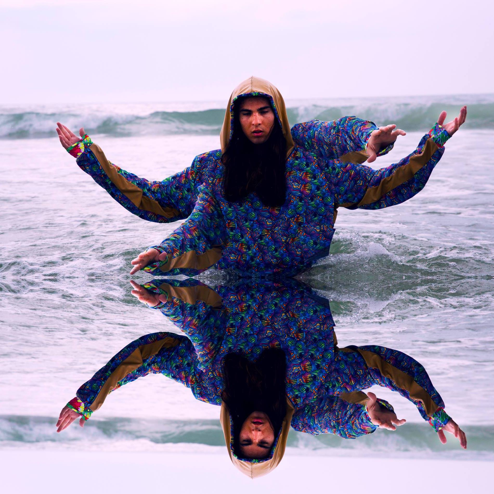
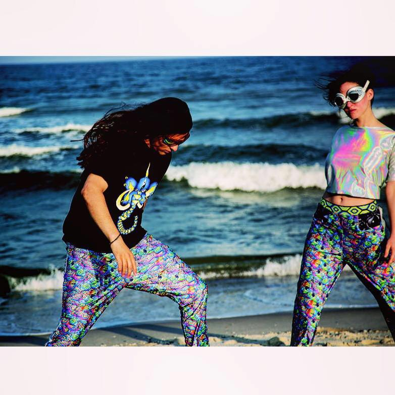

Welcome to Janak Tull Design
Here are some of my designs




All clothing is custom made for the individual. Fabrics come and go fast. Find the group Pance news #worldwide on facebook and request to enter to see latest fabric designs.
Send me an email yo.